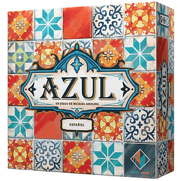
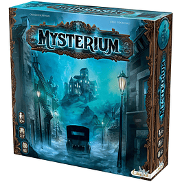

Bienvenido a Alimento Mental. ¡Donde los juegos de mesa son famosos por fortalecer habilidades mentales.!
Catalogo Azul  Azul. $ 79.990.- Ver Detalles Mysterium  Mysterium. $ 49.990.- Ver Detalles Cerrar